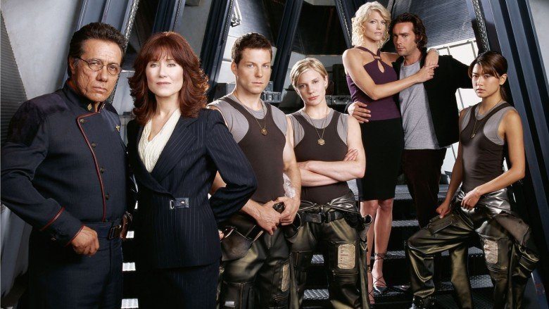

Judiciary Committee Selection
Although this judiciary committee is given it’s authority by the CDF, it will not perform military trials. A fair trial for any accused is the intention of these proceedings. The selection of the unbiased Judiciary Committee members is crucial in providing an impartial judiciary system. The selection of this Judiciary Committee will be overseen by the Chief Investigative Officer. During the selection of Five (5) Judiciary Committee members from qualified individuals who have submitted applications, the CIO must:
- Select no more than 2 CDF personnel
- Select no more than 2 military personnel
- Select at least 2 civilians
- These individuals would preferably have a law background or applicable equivalent
After the Committee has been selected by the CIO, the jury for any subsequent trials will be selected by the Judiciary Committee. The jurys selected must:
- Be deemed impartial by the Judiciary Committee
- Reflect a balance of representation of the community

Figure 8.1: We must all do our part to maintain order and justice